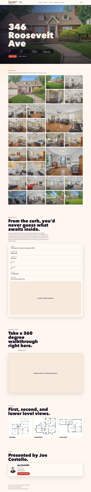

One customer experience
Buyers can understand the property without reconstructing it across unrelated services.
The photos were good. The 3D tour worked. The floorplans existed. The listing details were known. The customer experience was still broken, because seeing one property meant visiting several products.
A bundle of links is not a product.the problem behind the pilot
A real-estate listing is assembled by several specialists, and each specialist naturally delivers its own artifact. The photographer provides images. Matterport provides a tour. Property details move through internal notes and messages. Floorplans, maps, schedules, and contact information accumulate somewhere else.
Static images hosted on the vendor's site.
A separate Matterport experience and URL.
Facts, updates, and schedules inside messages or internal notes.
Brand, disclaimers, and next steps on another surface.
To understand one house, a buyer might open the photographer's gallery, follow another link for the tour, return to a message for the key facts, then search again for the agent's contact information. Sharing the listing meant sharing the same bundle.
The operating burden landed on the realtor as well. Each launch required locating assets, reconciling details, arranging them for the next channel, and checking that every link still worked. The pieces were reusable. The assembly was not.
The intervention was not another vendor page. It was an agent-operable workflow that could collect the existing materials, place them into an agreed NJJoe presentation, show the whole thing for approval, and publish a verified microsite.
Address, facts, photos, floorplans, tour, map, schedules, contact, branding.
Check required fields, links, media, labels, and approved language.
Generate the complete page and let a person inspect the real customer experience.
Release one listing subdomain, then check the public result on desktop and mobile.

Verified boundary: one listing microsite is live. The repeatable playbook exists. Time reduction is qualitatively clear from the removed assembly steps but has not yet been measured as a controlled before/after duration.
Buyers can understand the property without reconstructing it across unrelated services.
The same URL can travel through email, messages, social posts, listing channels, and direct conversations.
The realtor manages listing inputs once; the skill handles repeated composition, checking, packaging, and verification.
One property. One URL. No seams for the buyer to carry.